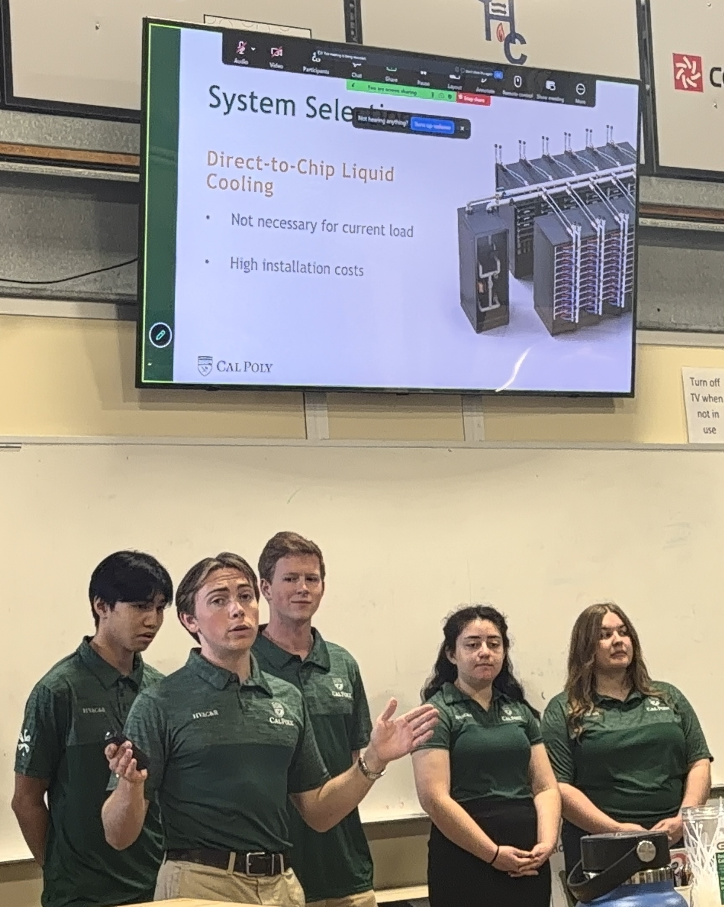
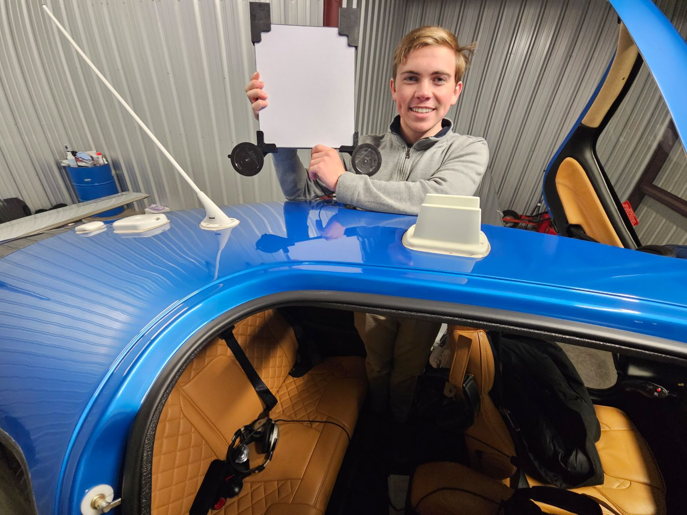
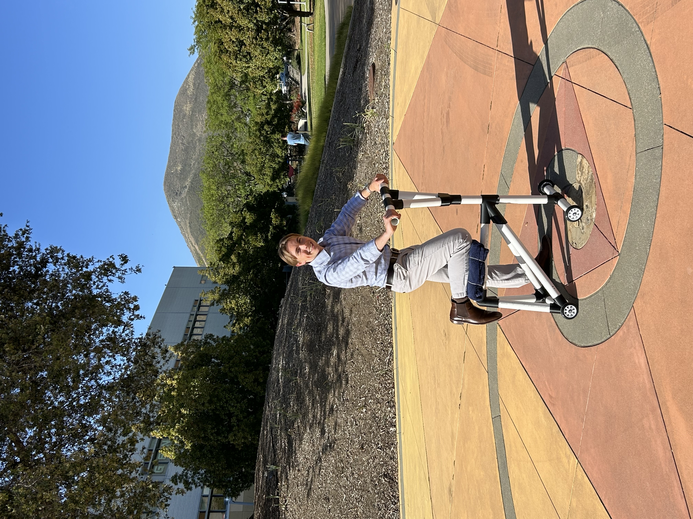

Engineering Projects & Reports

1. Paso Robles Edge Computing Facility Design Report
Event: ASHRAE Data Center Design Competition 2026
Team Members: Andrew Chapin, Max Scott, Kyle Chang, Ashley Wilburn, Patricia Zamudio
Advisor: Prof. Lauren Rueda & Cal Poly ASHRAE Club
Co-authored a comprehensive HVAC, sustainability, and code compliance report for a 60-ton (~180 kW IT white space load) edge computing data center in Paso Robles, California (Climate Zone 4).
- Cooling & Airflow Strategy: Designed roof-mounted overhead ducted RTUs featuring cold aisle containment, VFD fan modulation, and air-side economizers for free cooling during favorable ambient conditions.
- Efficiency & PUE: Modeled Power Usage Effectiveness across operating load factors, reaching a planning design PUE of 1.36 within the target 1.35–1.45 range.
- Renewable Energy & Microgrid: Sized a 100 kW dual rooftop (15° tilt) and ground-mounted (25° tilt) PV system paired with a 200 kWh battery energy storage system (BESS) for 4–9 PM peak shaving with PG&E.
- Safety & Compliance: Complied with California Title 24, California Building Code seismic standards, and NFPA 75 clean-agent fire suppression protocols using inert gas (Inergen IG-541) and pre-action sprinkler systems.

2. Flight Safety & Pilot Communications Hardware (my own company)
Company: Aria Aerospace
Executed end-to-end CAD design, rapid prototyping, CNC/3D fabrication, and direct-to-consumer digital distribution for custom aerospace safety and communications gear.

3. ARX 67 Knee Scooter Final Design & Testing Report
Course: ME 328, Cal Poly San Luis Obispo
Collaborators: Andrew Chapin, Adrian Tapia-Palacios, Jordan Simpson
Faculty Advisor: Prof. Ramanan Sritharan
Designed, analyzed, constructed, and experimentally tested a lightweight, low-cost plastic mobility knee scooter for patients recovering from lower-leg injuries. Built with a PVC main frame, custom 3D-printed PLA joints (Bambu A1), bearing-supported axles, and cushioned ergonomic contact points.
- Material & Cost Optimization: Produced a fully functional prototype at a total bill of materials cost of only $61.50, significantly undercutting commercial alternatives.
- Structural Analysis: Performed hand calculations (Shigley beam deflection & distortion energy theory) alongside SolidWorks FEA simulations for normal (180 lbf) and abuse (360 lbf) loading scenarios.
- Deflection & Safety Factors: Achieved a theoretical normal stress factor of safety of 4.0 (1497.3 psi vs. 6000 psi yield) on the main member and conducted physical deflection testing with camera baseline verification.
4. Cavitation Detection Software & Chiller Pump MVP
Company: Premier Pump and Power
Built a functional minimum viable product (MVP) utilizing pressure transducers, vibration sensor telemetry, and ECU data feeds to detect early-stage cavitation in high-demand pump systems, protecting equipment longevity.
5. Fluids Lab Portfolio (engineering memos)
Course: ME 347, Cal Poly San Luis Obispo
Collaborators: Andrew Chapin, Adrian Tapia-Palacios, Liam Shaw, Thomas Frutiger
Conducted and analyzed fluid mechanics experiments exploring boundary layers, pressure drop, laminar and turbulent flow, etc.